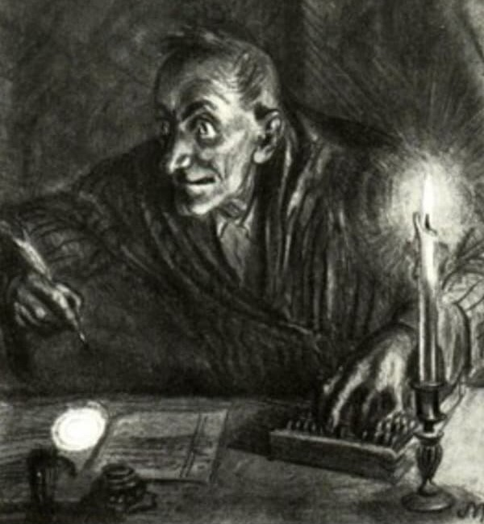
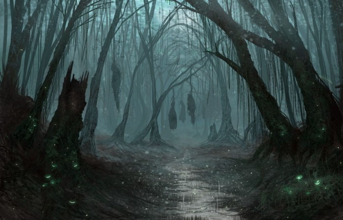

Портретная характеристика
Для описания внешности Порфирия Владимировича используем цитаты из текста произведения М.Е. Салтыкова-Щедрина "Господа Головлёвы"
«…росту пониже среднего, полный и даже с брюшком, выбритый, без усов и без бакенбард, с плотно выстриженными волосами на большой круглой голове, как-то особенно выпукло закруглённой на затылке. Пухлое, круглое и немного курносое лицо его было цвета больного, тёмно-желтого, но довольно бодрое и даже насмешливое».
«Это был человек лет тридцати пяти…»
«Пухлое, круглое и немного курносое лицо его было цвета больного, тёмно-жёлтого, но довольно бодрое и даже насмешливое. Оно было бы даже и добродушное, если бы не мешало выражение глаз, с каким-то жидким водянистым блеском, прикрытых почти белыми, моргающими, точно подмигивая кому, ресницами. Взгляд этих глаз как-то странно не гармонировал со всею фигурой, имевшею в себе даже что-то бабье, и придавал ей нечто гораздо более серьёзное, чем с первого взгляда можно было от неё ожидать».
Тайна имени
Имя Порфирий греческого происхождения, восходит к слову Πορφύριος – «пурпурный».
Известно, что цвет в сознании человека всегда соотносится с теми или иными идеями, значимыми для человеческого бытия. Пурпурный соединяет в себе холодный синий и тёплый красный, отражая идею баланса разума и чувства. Порфирий Владимирович на страницах романа рассуждает о примате ума над искушениями плоти, но эти рассуждения сопровождаются перипетиями, свидетельствующими об обратном: на свет появляется незаконнорожденный сын Головлёва от сожительства с экономкой. Разум героя – это в большей степени бессодержательное «умствование», фантастические измышления, уводящие из реальности в выдуманный мир, попытки самоуспокоения, усыпления совести. Салтыков-Щедрин, совмещая противоположности в речах и действиях персонажа, показывает, что и разум, и чувства Порфирия Владимировича находятся в подавленном, неразвитом состоянии. Они не то что не сбалансированы, но питают наиболее слабые, порочные стороны друг друга.
Его прозвища - это Иудушка, кровопиюшка, откровенный мальчик.
Иудушка происходит от слов "Иуда" и "Душка". Иуда - это предатель или же изменник. Душка - это милый или приятный человек. То есть Иудушка - это такой персонаж, который скрывает ужасную, пропитанную изменной личность.
Кровопиюшка - это человек, который пьёт кровь людей, понятное дело, что данное слово используется в переносном значении. Порфирий очень надоедливый человек, то есть приносит окружающим некий дискомфорт. Его особый характер в совокупности относится к людям безжалостно.
Откровенный мальчик - характеризует Порфирия как человека, который кажется говорит откровенно, от души. Но на самом деле за этой прямотой скрывается ужасная сущность, которая унижает других людей.
Маски добродетели
· Благовоспитанный сын
Благодаря искусству лести, приобретённому Иудушкой в детстве и освоенному в совершенсте уже в зрелом возрасте, он всегда получал от матери только "лучшие куски". Иудушка стал владельцем Головлёва, получил все капиталы матери, приобрёл невероятную власть над людьми и их судьбами.
· Заботливый брат
На словах Порфирий является примерным братом, который призывает всё решать мирно, а на самом деле он лишь лицемер, прикрывающий этими словами свои коварные намерения. Он никогда не следует тому, что он говорит, никогда не говорит то ,что он думает, поэтому любое из его слов - это лишь пустой звук, созданный ради сокрытия своих истинных мыслей. Он притворяется заботливым братом, а затем, радуясь смерти братьев, забирает их капиталы себе.
· Чадолюбивый отец
Порфирий настолько безразличен к людям, что даже жизнь его собственных людей никак его не тревожит, он без сожалений обрекает на гибель каждого из своих сыновей. Один из них покончил с собой, второй не получил от отца помощи в оплате долга, третьего Порфирий вообще отправил в воспитательный дом. Иудушка не способен не только на привязанность, но и на простое сожаление.
Черты характера
Порфирий Владимирович Головлёв - это крайне лицемерный и лживый человек, пустословный и болтливый. В нём нет ни единого нравственного принципа. Сам же он себя позиционирует в образе правдивого и прямого человека, несмотря на совершённые им низменные поступки. К своим сыновьям он относится с безразличием, жестокостью и холодностью. Однако в его характере присутствует религиозность и набожность, выражающиеся в ежедневных многочасовых молитвах, но эти качества обусловлены страхом Иудушки перед нечистой силой, и они не способны взрастить в душе героя доброту, сочувствие к окружающим.
Цели и смысл жизни
Основной целью в жизни Порфирия Владимирович(Иудушки) это было наследство. Вся его цель - это владение большим количеством денег и землей, но он никогда не думал о других ценностях, например моральных. Только под конец его жизни Иудушка осознал свои грехи, и он решается навестить могилу матери, чтобы извиниться, но по пути замерзает и умирает.